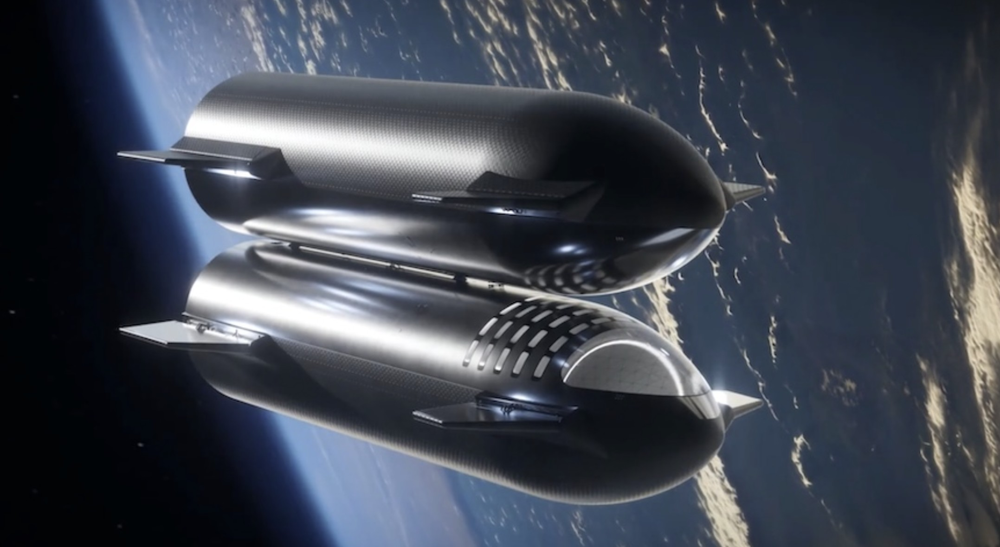
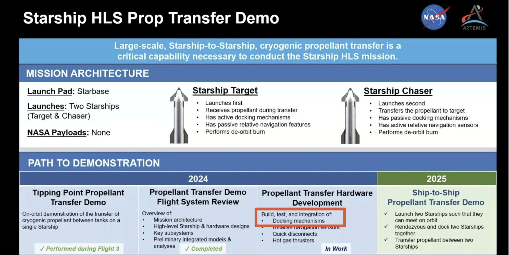

Dates: May 2024 – August 2024
Team: Starship Human Lander System (HLS) Mechanisms
Focus: Design, analysis, build, and test of soft capture docking mechanism damper struts

I worked on the HLS Mechanisms team, an was the responsible engineer for the soft capture docking mechanism damper struts, a flight-critical component for Starship's Human Landing System. The scope covered final design, tooling, supplier coordination, first article builds, acceptance test development, and confidence qualification testing.

The soft capture docking mechanism is responsible for the initial contact and capture phase of Starship's docking sequence for the Human Landing System. The damper struts are a key structural and dynamic component of that mechanism, absorbing loads during capture and maintaining alignment through the docking sequence. The work this internship spanned final design through qualification testing.
I finalized the design of the damper strut assemblies and released multiple revisions as procurement, build, and integration challenges arose. Each revision required balancing design intent against real-world constraints from suppliers, manufacturing, and the broader docking mechanism assembly.
Damper strut tooling and build was on a tight two-week schedule to get four struts built (driven by the integrated mechanism testing date). I had to pivot quickly between concepts and be flexible due to supply chain issues and released build instructions alongside the tooling.
I worked directly with suppliers and manufacturers throughout the design and build process. When out-of-tolerance parts were received, I created issue orders, performed analyses to determine whether the deviations were acceptable, and either dispositioned the parts or determined the path forward to get conforming parts made within schedule. I resolved multiple SDRs (Supplier Discrepancy Reports) across the project.
I finally executed first article builds of the damper strut, working through build issues in real time and feeding findings back into the build instructions and assembly documentation.
I determined which tests were required for acceptance of the damper struts. For each candidate test, the decision required either a first-principles justification for why it could be omitted, or a determination of test margins and a fixture design if it was required. This wasn't a checklist exercise — each decision needed to be defensible from fundamentals.
A specific challenge arose with the mechanical friction springs: the supplier's pre-built, broken-in, and tested springs could not be used for our application, so I had to work with the supplier to design a custom break-in process from scratch. I also performed performance tests across different lubricants and lubricant amounts to characterize spring behavior and inform the final lubrication specification.
I wrote and released the damper strut ATP and the mechanical friction spring break-in instructions, incorporating feedback and constraints from other engineers on the team and from build owners.
Following the acceptance test process, I determined the required tests for the confidence qualification campaign. I applied the same first-principles framework but to qualification standards rather than acceptance standards. I also determined qualification test limits for the vibration and thermal tests (with help from analysis team).
The vibe test fixture was the most technically difficult fixture of the project. Requirements included safely preloading the strut to match launch configuration, accurately reading spring preload throughout the test, and ensuring the fixture itself survived the test environment without compromising the measurement. I iterated through several preload instrumentation concepts before arriving at a design that satisfied all three constraints simultaneously. I also ran modal analyses to support the vibration test planning.
I designed, released, and executed the confidence qualification tests, then summarized the findings to inform the flight redesign of the soft capture mechanisms. The test data fed directly into design decisions for the next revision.
I integrated the damper struts into the full soft capture docking assembly and assisted with full integrated mechanism sled tests, which validated the system at the assembly level beyond the component-level qualification.
Mechanical design & analysis • CAD (NX) • Hand calculations & first-principles analysis • FEA • Modal analysis • Test fixture design • Acceptance & qualification test development • Vibration testing • Thermal testing • Static load testing • SDR disposition & issue resolution • Supplier coordination • GD&T, engineering drawings, SOPs • Change order & revision tracking
Email: jennifersili@berkeley.edu
LinkedIn: linkedin.com/in/jennifersili